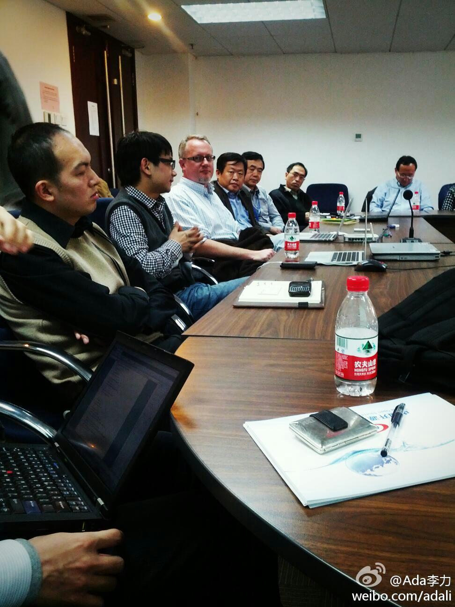

今天在中国开源软件促进联盟 www.csio.org.cn 参见一个座谈会, 刘明博士做东道主，程辉邀请到OpenStack基金会COO Mark Collier与大家交流。关于VMVare的问题，Mark事先声明不作回答。 
会的，咱人多，况且现在国际上都认为中国有钱。@凯撒吴:今天和Openstack基金会COO Mark Collins交流中国开源云平台的发展，他提到在2014年基于Openstack的公有云平台会在30个国家40个城市落地，将全面超越亚马逊AWS平台… 中国在开源云平台的采用上会不会有机会走在领先的地位！？@程辉 @Ada李力 我在:羊坊店路
听一位离开IBM的朋友说，新上任CEO要三年内利润翻倍，强调股东价值，员工福利因此被削减得很厉害。大家都知道公司要盈利的道理，但像HP, IBM这种砍员工福利的盈利之道，只是让少数大股东高兴，大多数员工不高兴，总这么干的公司还是少去为妙。
今天下午的会议通知上说参会者有@陈怀临 参加，久仰大名。会中看到一人穿冲锋衣坐靠门位置，独坐，未几，出门，再没见回来。会后大家互换信息时，有几人都问陈怀临怎么没来。如果我没认错人的话，来晚了坐一会儿就走的应该是陈。[呵呵]
回复@钱袋宝罗旭:一些民企没有建立起每个人要为自己做事结果负责的制度。有这样的现象：权利大而责任小，资源多而产出少。//@钱袋宝罗旭:不懂@Ada李力:外企和民企的差别二：外企是做最坏的打算，往最好努力；民企是做最好的打算，执行过程中做了最少的努力。by @负轭老马